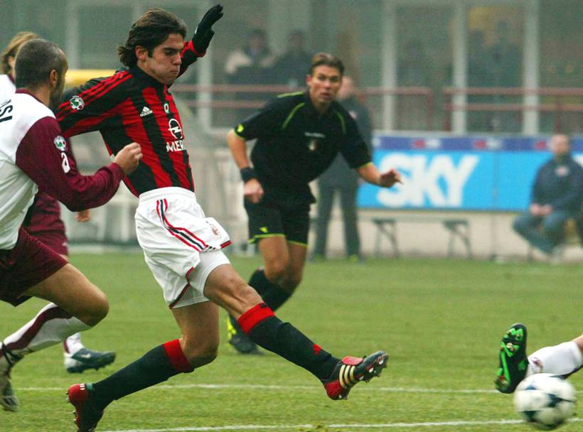
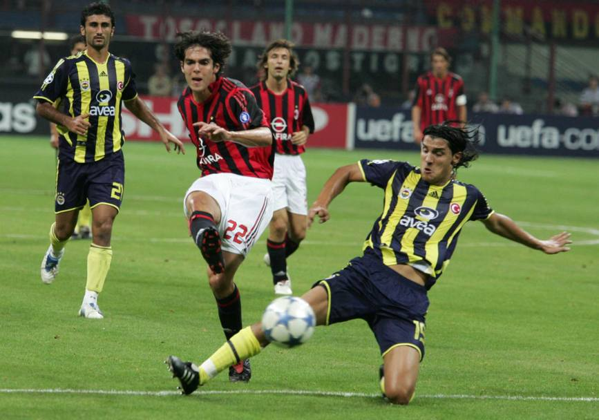
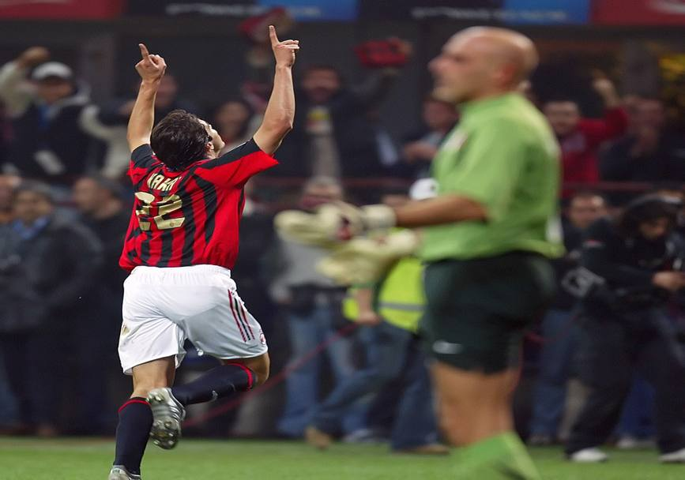

Kakà segna il primo gol con la maglia del Milan il 5 ottobre 2003 durante il derby con l'Inter

Prima doppietta in campionato l'11 gennaio 2004: la segna alla Reggina

Uno dei più bei gol di Kakà al Milan il 13 settembre 2005 al Fenerbahce dopo uno slalom fantastico

Kakà esulta per il gol alla Juve il 29 ottobre 2005
Esultanza di Kakà al Massimino